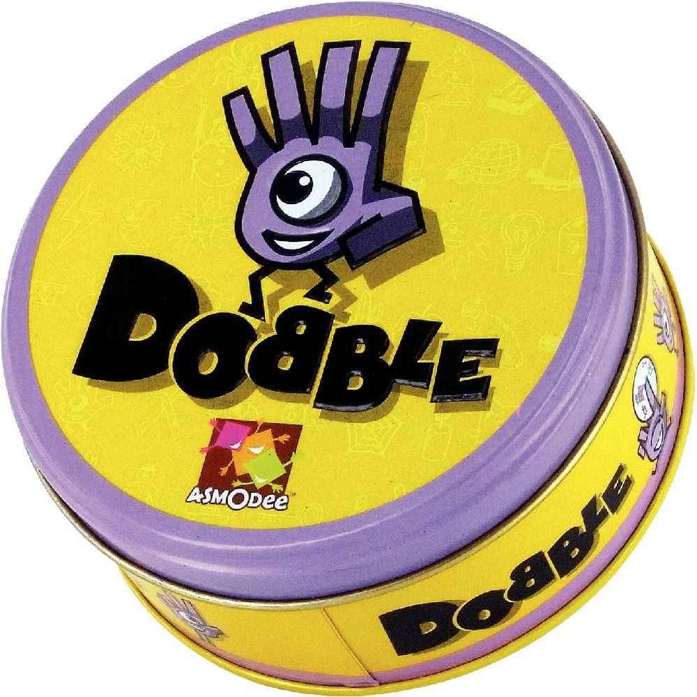
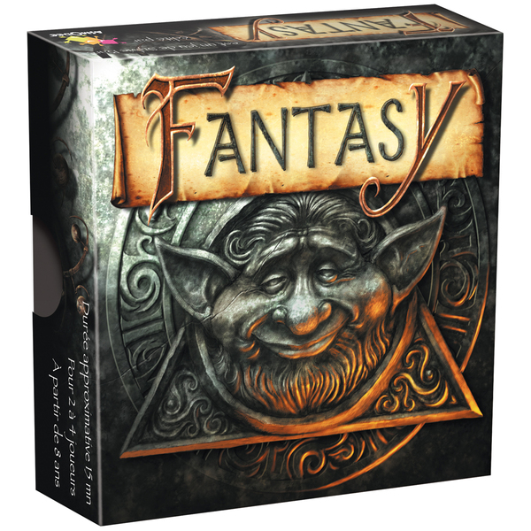
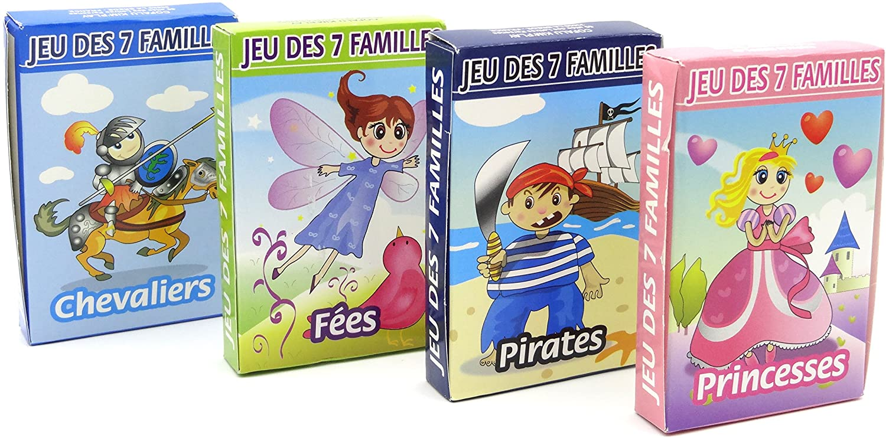
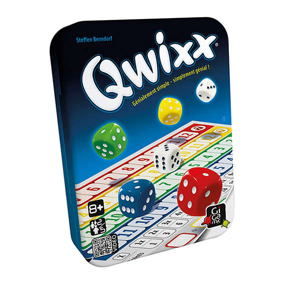

Dobble

Age : 6 ans et plus
Nb de joueurs : 2 à 8
Temps de partie : 10 minutes
Dobble est un jeu d’observation et de rapidité dans lequel tous les joueurs jouent en même temps.
55 cartes comportant chacune 8 symboles, 5 variantes… et c’est parti !
Quel que soit le jeu choisi, repérez plus vite que vos adversaires le seul et unique symbole identique
entre deux cartes puis nommez-le à haute voix. Ensuite, récupérez la carte comportant le même symbole
que la vôtre, défaussez votre carte ou refilez-la à un adversaire, selon les règles de la variante à
laquelle vous jouez.
Vous pouvez jouer à tous les mini jeux dans l’ordre, dans le désordre, ou rejouer toujours au même.
Le principal est de s’amuser !
Fantasy

Age : 8 ans et plus
Nb de joueurs : 2 à 4
Temps de partie : 15 minutes
Fantasy est un petit jeu de cartes rapide et simple. Chaque joueur dispose de 5 cartes en main appartenant
à l'un des huit peuples du jeu. Chacune de ces cartes représente l'une des différentes créatures qui peuplent
la forêt et chaque peuple dispose d'un pouvoir unique. Le but du jeu est de disposer du plus grand nombre de
cartes posées devant vous à la fin de la partie.
7 Familles

Age : 4 ans et plus
Nb de joueurs : 2 à 4
Temps de partie : 15 minutes
Un jeu de 7 familles où les joueurs tentent de reconstituer les 7 familles.
Qwixx

Age : 8 ans et plus
Nb de joueurs : 2 à 5
Temps de partie : 15 minutes
A son tour, chaque joueur lance les dés et tout le monde peut utiliser le résultat pour cocher un chiffre d’une de ses
rangées. Plus vous cochez de cases, plus vous marquez de points.
Mais attention, les chiffres sont classés dans un certain ordre et une fois que vous en avez passé impossible de revenir
en arrière.